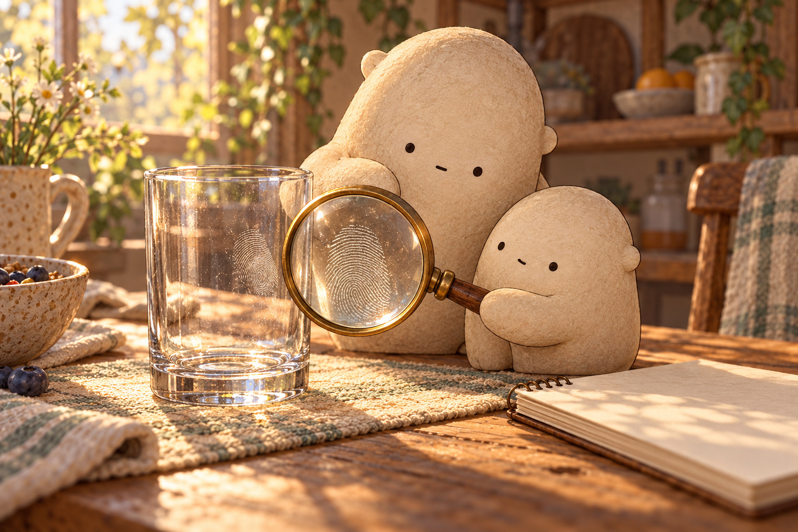
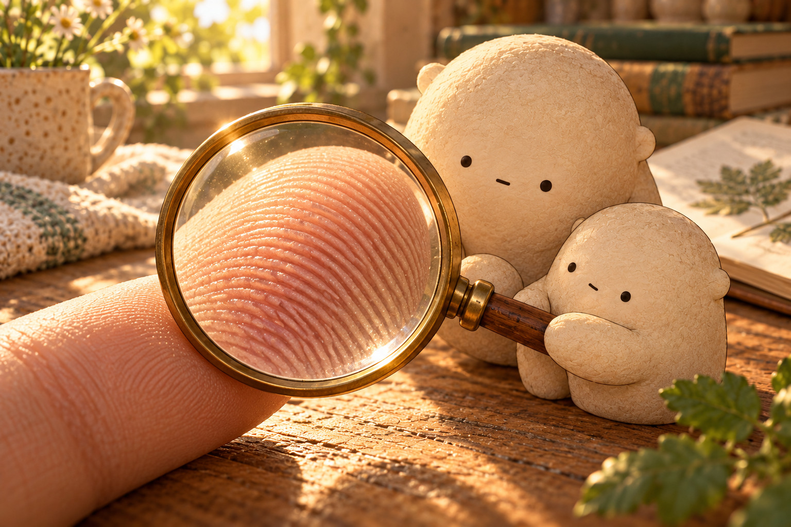
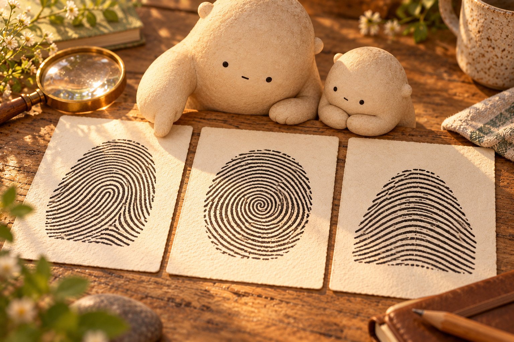
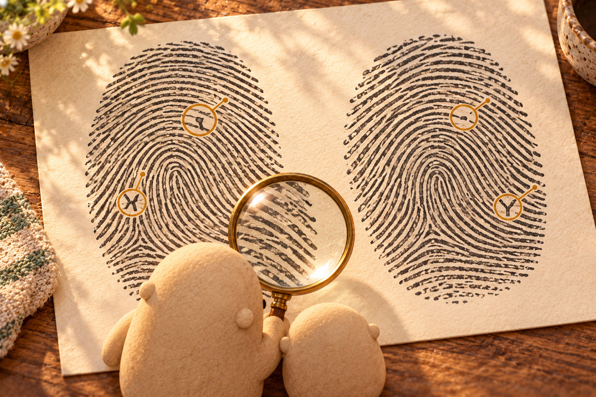
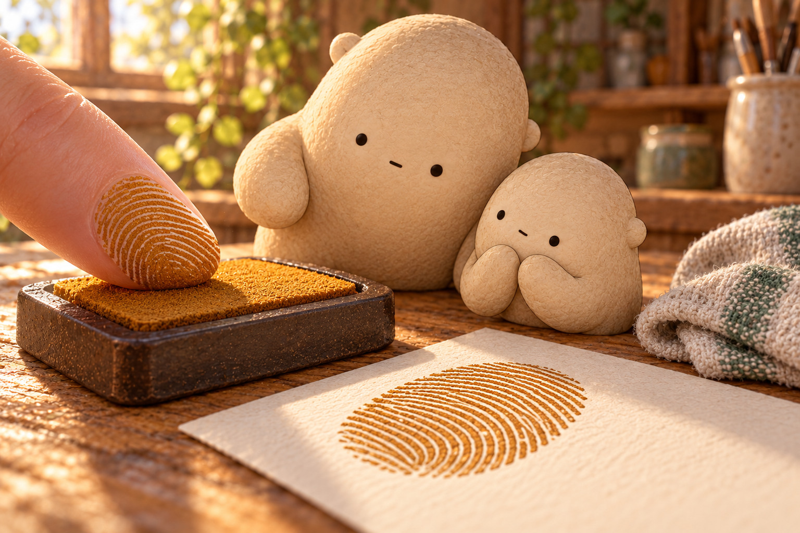
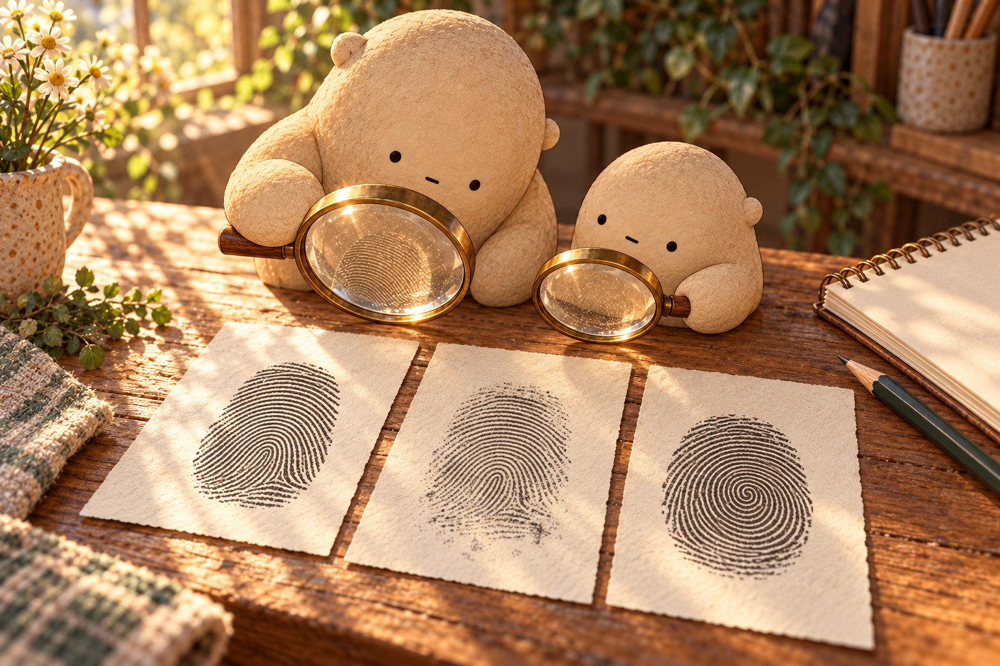

The map on a fingertip
A mark on the glass
Morning light crossed the table, and a faint swirl appeared on a drinking glass. Little Wonderer tilted the magnifier. The mark was not one solid smudge. It held many curved lines. Big wondered aloud, “What part of a fingertip could leave a map like that?”
What first showed that the mark held a pattern?

Ridges and grooves
A close look at a fingertip revealed raised lines with lower spaces between them. The raised lines were friction ridges; the lower spaces were grooves. Only the ridge tops had touched the glass, leaving a flat impression of the fingertip's textured surface.
Why did the impression show separate lines instead of one dark patch?

Three broad flows
Big placed three field cards on the table. One pattern curved back toward the side: a loop. One circled a center: a whorl. One rose like a hill and crossed the card: an arch. These families described the broad flow, but they did not tell the whole story.
How does an arch's flow differ from a loop's flow?

Look inside the loop
Two cards both held loops. At first they seemed alike. Then Little found a ridge that ended on one card and continued on the other. Another ridge split into two paths at a different place. The tiny endings and splits turned each broad loop into a more detailed map.
Which evidence showed that the two loops were not the same map?

A print on paper
Little touched one fingertip to a washable stamp pad, then pressed paper once. Ink rode on the raised ridge tops. The lower grooves stayed pale. The paper held an impression: dark ridge paths with light spaces between them. After one careful look, the print stayed at home and hands were washed.
Which parts of the fingertip carried ink to the paper?

Same map, new mark
A second press looked lighter and a little smudged, but the same turns, endings, and splits still lined up. Pressure had changed the impression's clarity, not the ridge map beneath it. Little set a different fingertip print beside the pair. Its broad flow and tiny details made a new map to explore.
How could Little tell that the lighter print came from the same ridge map?
For a complete still story, download the foldable book.
Fingerprints
How can fingertips share three big patterns yet keep different tiny details?
Where shall we look?
What made the curved lines on the glass?
Look for the pale ridges and the darker spaces between them.
A little explanation & something to try
A fingertip has raised lines called friction ridges, with lower grooves between them. When ridge tops touch a surface, sweat and natural skin oils can leave a faint impression of their paths.
Try this. Tilt a clean drinking glass toward a lamp and look for a faint print. Keep the glass on the table while you look.
Which way do the ridges flow?
Trace one curve in each large pattern card with your eyes.
A little explanation & something to try
Many fingerprints can be grouped by their broad ridge flow. A loop curves back toward one side, a whorl circles around a center, and an arch rises and crosses from one side to the other.
Try this. Draw one loop, one circle-like whorl, and one hill-shaped arch on paper.
Can two loops still be different?
Find a ridge that ends and another that splits into two paths.
A little explanation & something to try
The big pattern family is only a first clue. Along the ridges are smaller details: a line may end, split, shorten, or bend. Two prints can both be loops while their tiny details appear in different places.
Try this. On two drawn loops, add endings and forks in different places. Compare your maps.
Why does a print have dark lines and pale gaps?
Compare the inked fingertip with the print it leaves on paper.
A little explanation & something to try
Washable ink touches the raised ridge tops. When the fingertip presses paper, those tops transfer dark lines while the lower grooves leave pale spaces. The print is a flat impression of a textured fingertip.
Try this. Use a non-toxic washable stamp pad on one fingertip, press once on paper, and wash your hands. Keep the paper at home.
Number crunch at the print table
Regroup tens and ones while you count paper ridge marks, cards, and magnifiers.
Choose one equation and show the regrouping with tens and ones.
1. Little draws 47 curved ridge marks, then adds 26 more. How many ridge marks are in the drawing?
47 + 26 =
A small hint
Add the ones first. Regroup 13 ones as 1 ten and 3 ones.
2. There are 68 paper pattern cards. Big puts away 29. How many cards remain on the table?
68 − 29 =
A small hint
Regroup 1 ten so 18 ones can take away 9 ones.
3. A tray holds 36 loop sketches and 58 whorl sketches. How many sketches are there altogether?
36 + 58 =
A small hint
Six ones plus eight ones makes 14 ones. Regroup 10 of them as 1 ten.
4. Little circles 46 details on a sheet with 72 ridge details. How many details are not circled?
72 − 46 =
A small hint
Regroup 1 ten so 12 ones can take away 6 ones.
5. Big sets out 59 cream print cards and 24 tan print cards. How many cards are ready?
59 + 24 =
A small hint
Nine ones plus four ones makes 13 ones. Regroup 10 ones as 1 ten.
6. The field table begins with 81 magnifier cards and uses 37. How many magnifier cards are left?
81 − 37 =
A small hint
Regroup 1 ten so 11 ones can take away 7 ones.
Describe a ridge map
Choose a close look and compare the paths you see.
Both patterns …name one feature they share
One ridge …tell where it ends or splits
The evidence shows …connect a detail to your conclusion
Draw two large ridge paths. Add one ending and one split, then circle what changed.
SAY IT FIRST. THEN DRAW OR WRITE.
A temporary space. Copy your words before closing or reloading; they are not saved or sent.
ridgegrooveloopwhorlarchendingsplitimpressiondetailevidence
Did you name a detail and explain what that detail helped you notice?